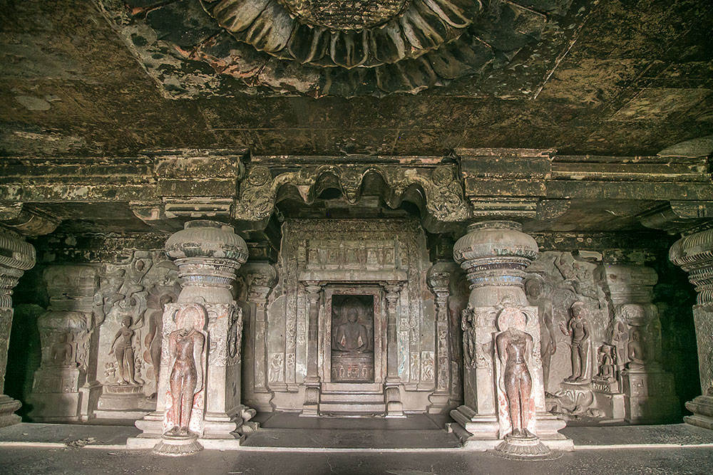

Ellora Caves(Verul Caves)
The caves at Verul (Ellora) in Sambhajinagar, Maharashtra are one of India’s greatest rock-cut architectural sites. They were built between the 6th and 10th centuries and represent three major religions of ancient India.
Hindu (Brahmanical) Caves

The Hindu Caves (Caves 13–29) at the Ellora Caves were built
between the 7th and 9th centuries. These caves are dedicated
to Hindu gods such as Lord Shiva and Lord Vishnu.
The most famous cave is Cave 16, known as the Kailasa Temple,
which is carved from a single massive rock.
It is one of the greatest examples of ancient Indian rock-cut
architecture and engineering skills.
Buddhist Caves

The Buddhist Caves (Caves 1–12) at the
Ellora Caves were built between the 6th and 7th centuries.
These caves mainly include monasteries called Viharas,
where monks lived, and prayer halls known as Chaityas,
where worship was conducted. The caves feature beautiful
carvings and sculptures of Lord Buddha and Bodhisattvas,
showing the artistic excellence of that time. Among them,
Cave 10 is especially famous and is known as the “Vishwakarma Cave”
or the “Carpenter’s Cave” because of its detailed rock-cut architecture
that resembles wooden construction.
Jain Caves

The Jain Caves (Caves 30–34) at the Ellora Caves were built
between the 9th and 10th centuries. These caves are dedicated
to Jain Tirthankaras. They are known for their detailed carvings,
beautiful pillars, and impressive sculptures.
The Jain caves reflect simplicity along with artistic beauty
and represent the religious values of Jainism.